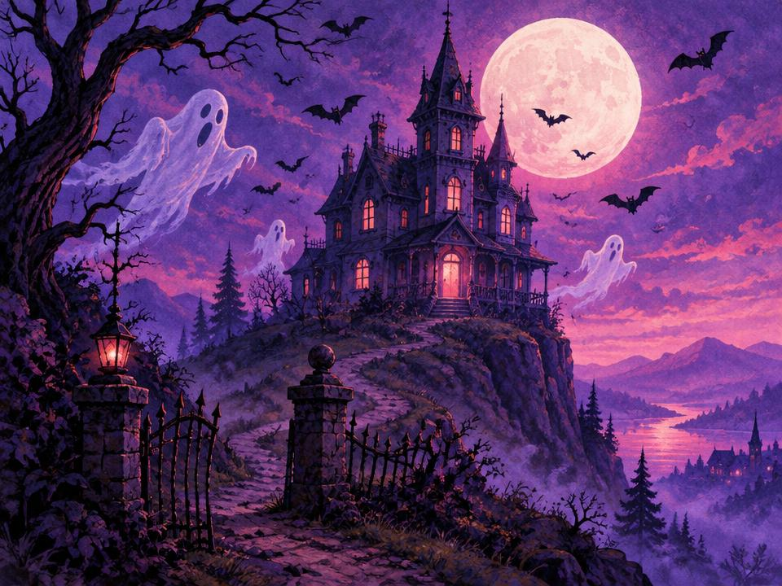
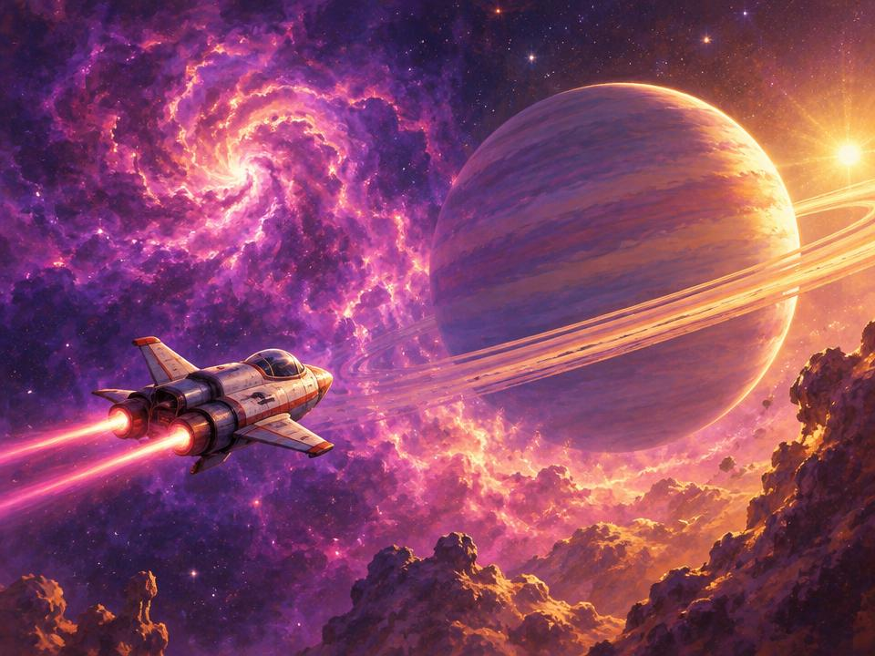
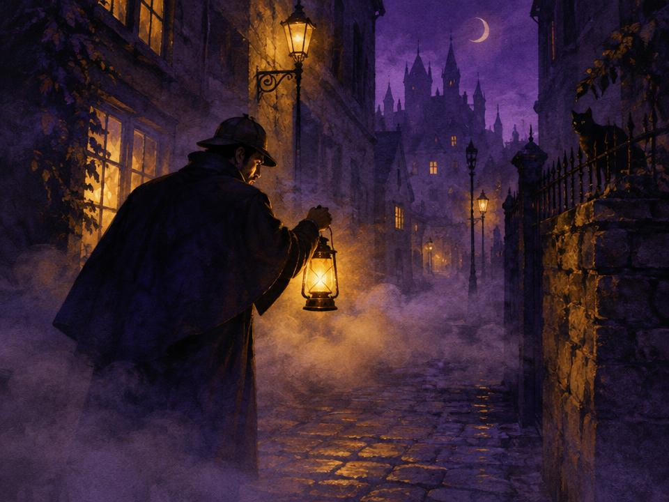
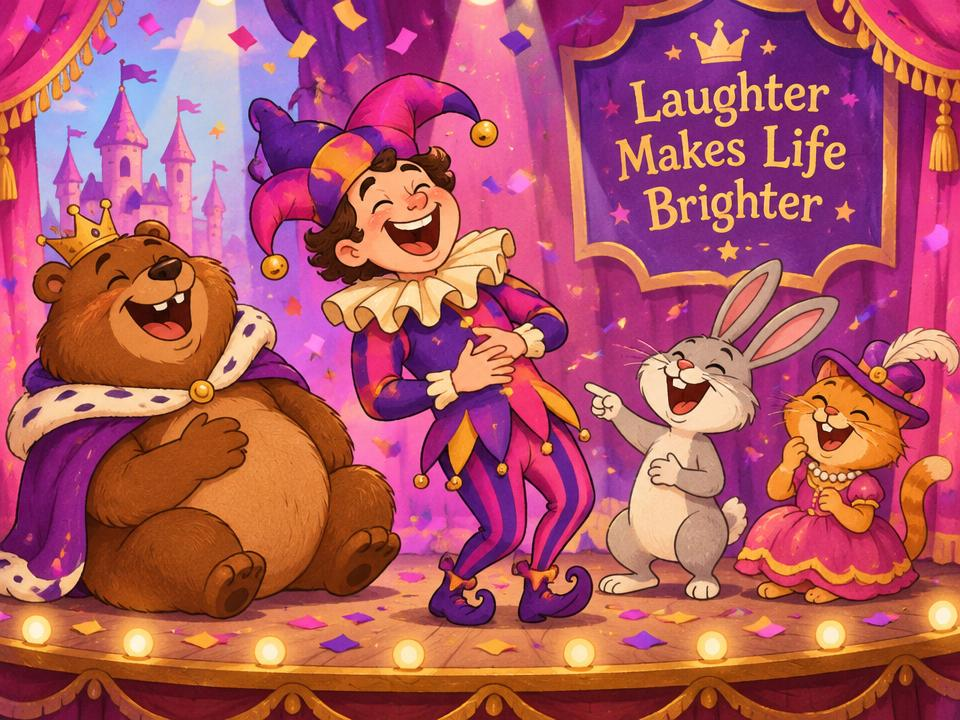

O Último Portal
- 👁 2,4 mi
- ★ 98 mil
- ☰ 12
Leia fanfics de graça, vote nos seus capítulos favoritos e escreva o final que você sempre quis para seus personagens.
As fanfics mais lidas pela comunidade.

#3 A Mansão do Fim da Rua @noite_eterna
#4 Estrelas Cruzadas @orbita.azul
#5 A Carta Esquecida @detetive.lu
#6 O Reino Mais Atrapalhado @bobo_da_cortepor @estrela_cadente
Quando as cores começam a sumir dos desenhos animados, dois heróis de mundos diferentes precisam trabalhar juntos para salvar a imaginação — antes que o último portal se feche.
Histórias onde universos diferentes se encontram.
Fantasia
por @estrela_cadente
Romance
por @luzdecinema
Terror
por @noite_eterna
Ficção científica
por @orbita.azul
Publicar sua fanfic leva menos de 5 minutos.
Escolha uma imagem, o título e o fandom da sua história.
Publique um capítulo de cada vez, no seu ritmo.
Leitores comentam, votam e seguem você.